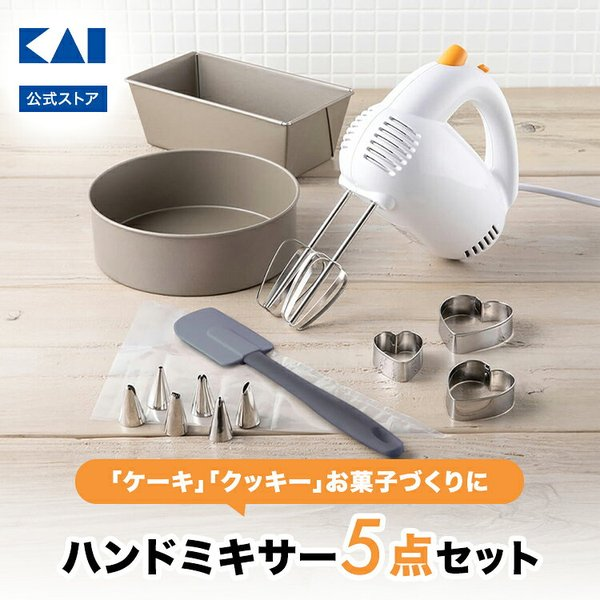
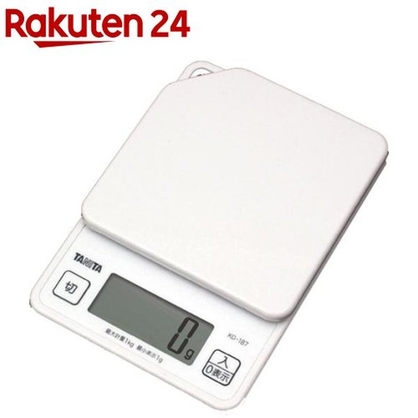
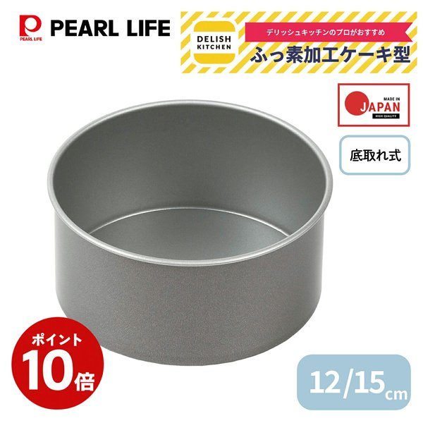
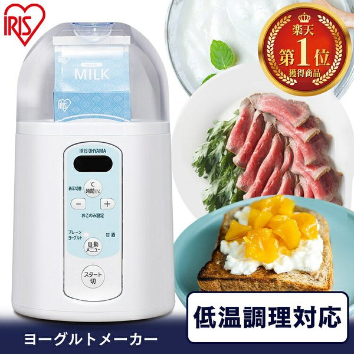
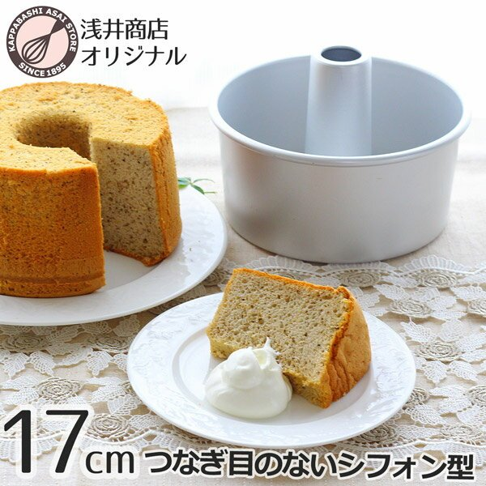
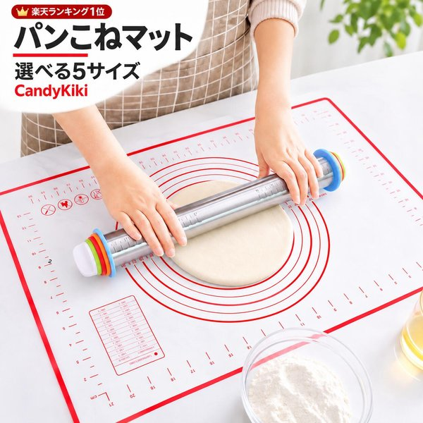
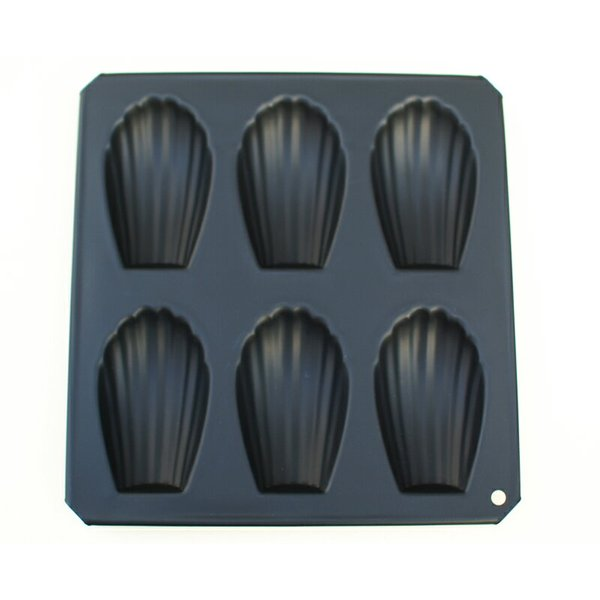
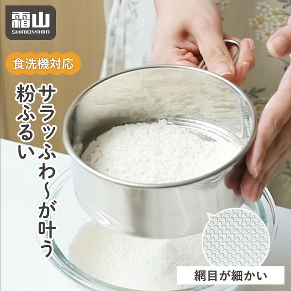
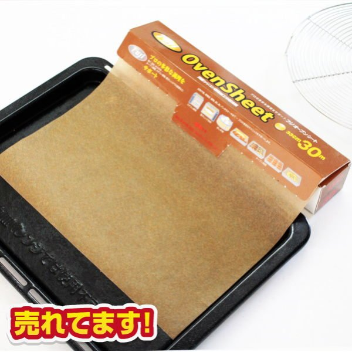
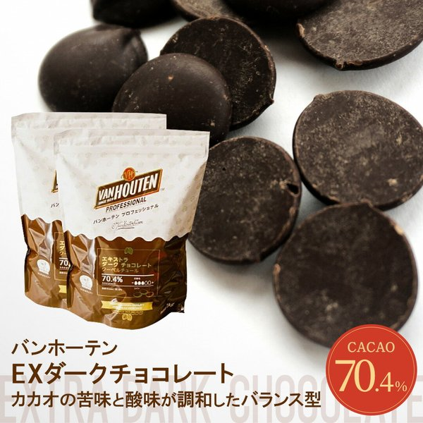

【2026年・お菓子作り＆パン作り10選】貝印 ハンドミキサー5点セット・タニタ KD187WH・パール金属 ホールケーキ型・アイリスオーヤマ IYM-014・浅井商店 シフォン型17cm・CandyKiki こねマット・タイガークラウン マドレーヌ型・霜山 粉ふるい・フジ オーブンシート・バンホーテン チョコを実売価格で比較
お菓子作りとパン作りは、道具が増えやすい趣味です。最初から全部揃えると使わないものが残るので、作りたいものが決まっている順に買い足すほうが、結果的に安く済みます。
選ぶ軸は3つです。まず計量。粉と砂糖をはかるスケールは、レシピ通りに作るための土台になります。次に型。ケーキ型、シフォン型、マドレーヌ型は形が違うので、焼きたいお菓子から決めます。最後に発酵と焼き。パンを作るなら温度を保つ機械と、天板に敷くシートがあると仕上がりが安定します。
本記事では、楽天市場で人気・高評価のお菓子作り・パン作り道具10選を、実売価格とレビュー評価つきで写真付き紹介します。
- おすすめ10選 スペック・特徴比較表
- BEST 1｜貝印 ハンドミキサー 電動 泡立て器 5点セット
- BEST 2｜タニタ デジタルクッキングスケール KD187WH
- BEST 3｜パール金属 デリッシュキッチン ホールケーキ型 15cm 底取れ式
- BEST 4｜アイリスオーヤマ ヨーグルトメーカー IYM-014
- BEST 5｜浅井商店 シフォンケーキ型 17cm つなぎ目なしアルミ型
- BEST 6｜CandyKiki クッキングマット パンこね台 5サイズ 目盛り付き
- BEST 7｜タイガークラウン マドレーヌ型 シェル6個付 天板 5045
- BEST 8｜霜山 粉ふるい 12.5cm ステンレス 持ち手付き
- BEST 9｜フジ オーブンシート 業務用 33cm×30m
- BEST 10｜バンホーテン エキストラ ダークチョコレート 70.4％
- 【読者負担0円】買わなくても得する無料サービス
- まとめ：お菓子作り・パン作り道具10選の選び方
| 順位 | 商品名 | ブランド | 最大の特徴・おすすめ理由 | 総合評価 |
|---|---|---|---|---|
| BEST 1 | 貝印 ハンドミキサー 電動 泡立て器 5点セット | 貝印（KAI） | ハンドミキサーと型が1箱に揃う | 4.70 |
| BEST 2 | タニタ デジタルクッキングスケール KD187WH | タニタ（TANITA） | 表示が大きく読みやすい | 4.68 |
| BEST 3 | パール金属 デリッシュキッチン ホールケーキ型 15cm 底取れ式 | パール金属（PEARL LIFE） | 底が外れて型から出しやすい | 4.77 |
| BEST 4 | アイリスオーヤマ ヨーグルトメーカー IYM-014 | アイリスオーヤマ（IRIS OHYAMA） | 温度と時間を設定して任せられる | 4.63 |
| BEST 5 | 浅井商店 シフォンケーキ型 17cm つなぎ目なしアルミ型 | 浅井商店 | つなぎ目がなく生地が傷みにくい | 4.75 |
| BEST 6 | CandyKiki クッキングマット パンこね台 5サイズ 目盛り付き | CandyKiki | 5サイズから台に合うものを選べる | 4.42 |
| BEST 7 | タイガークラウン マドレーヌ型 シェル6個付 天板 5045 | タイガークラウン（TIGERCROWN） | 6個同時に焼ける | 4.56 |
| BEST 8 | 霜山 粉ふるい 12.5cm ステンレス 持ち手付き | 霜山（SHIMOYAMA） | 持ち手付きで片手で振れる | 4.64 |
| BEST 9 | フジ オーブンシート 業務用 33cm×30m | フジ | 30m巻きで長く使える | 4.79 |
| BEST 10 | バンホーテン エキストラ ダークチョコレート 70.4％ | バンホーテン（VAN HOUTEN） | カカオ70.4％のビタータイプ | 4.65 |
貝印 ハンドミキサー 電動 泡立て器 5点セット

ハンドミキサーに、パウンドケーキ型やシリコンべら、絞り口金などをまとめた5点セットです。泡立てから生地を混ぜるところまで、これ1箱で始められます。ケーキ型が付いてくるので、初めてのケーキ作りでも型を別に買わずに済みます。楽天市場での実売価格は約3,582円（2026年11月時点）。
- ハンドミキサーと型が1箱に揃う
- スイッチで速度を切り替えられる
- ケーキ型付きで別買いが減る
- 付属の型は小ぶりなので、大きなケーキを焼くなら別に型が要る
タニタ デジタルクッキングスケール KD187WH

タニタのデジタルクッキングスケールです。表示が大きく、ボタンの数も少ないので、粉や砂糖をはかるたびに操作で迷いません。少しずつ足して調整したい場面でも、数字が読み取りやすい画面です。楽天市場での実売価格は約1,580円（2026年11月時点）。
- 表示が大きく読みやすい
- ボタンが少なく操作が簡単
- 製菓と料理の両方で使える
- 平らな台型なので、ボウルを載せるときは水平な場所が要る
パール金属 デリッシュキッチン ホールケーキ型 15cm 底取れ式

パール金属のデリッシュキッチンのホールケーキ型です。12cmと15cmから選べ、底が外れるセパレート式なので、焼き上がったスポンジを崩さずに型から出せます。ふっ素加工で、使ったあとの汚れも落としやすい型です。楽天市場での実売価格は約1,290円（2026年11月時点）。
- 底が外れて型から出しやすい
- 12cmと15cmから選べる
- ふっ素加工で洗いやすい
- 底が外れるぶん、生地を流す前に型をしっかり組んでおく必要がある
アイリスオーヤマ ヨーグルトメーカー IYM-014

アイリスオーヤマのヨーグルトメーカーです。温度を一定に保つ機能とタイマーがあり、甘酒や納豆、塩麹づくりにも使えます。パン専用の機械ではありませんが、生地を発酵させるときの温度管理に使う人もいます。楽天市場での実売価格は約4,250円（2026年11月時点）。
- 温度と時間を設定して任せられる
- 甘酒や塩麹も作れる
- 庫内が狭く置き場所を取らない
- パン専用の発酵器ではないので、大きなボウルは入らない
浅井商店 シフォンケーキ型 17cm つなぎ目なしアルミ型

浅井商店のオリジナルのシフォンケーキ型です。つなぎ目のないアルミを絞って作られていて、生地が引っかかる継ぎ目がありません。17cmは1台で作りやすく、型から外すときに崩れにくい厚さです。楽天市場での実売価格は約2,695円（2026年11月時点）。
- つなぎ目がなく生地が傷みにくい
- 17cmで作りやすい
- 日本製のアルミ型
- 使ったあとは水分を拭き取って乾かす必要がある
CandyKiki クッキングマット パンこね台 5サイズ 目盛り付き

シリコン製のパンこね台マットです。30×40cmから80×60cmまで5サイズあり、作業台の広さに合わせて選べます。表面に目盛りが入っているので、生地を伸ばす大きさの目安にできます。楽天市場での実売価格は約850円（2026年11月時点）。
- 5サイズから台に合うものを選べる
- 目盛り付きで生地を伸ばしやすい
- 洗って繰り返し使える
- シリコンなので、刃物を直接使うと傷が付く
タイガークラウン マドレーヌ型 シェル6個付 天板 5045

タイガークラウンのマドレーヌ型です。貝の形をしたくぼみが6個ある天板で、1回に6個焼けます。シリコン加工で空焼きが不要なので、届いたその日にマドレーヌを焼けます。楽天市場での実売価格は約1,166円（2026年11月時点）。
- 6個同時に焼ける
- 空焼き不要ですぐ使える
- シリコン加工で型離れがよい
- 天板ごと焼くので、オーブンの庫内が狭いと入らないことがある
霜山 粉ふるい 12.5cm ステンレス 持ち手付き

霜山のステンレス製の粉ふるいです。直径12.5cmで、持ち手が付いているので片手で振るえます。網が細かく、粉砂糖やココアを仕上げにかけるのにも使えます。食洗機に対応しています。楽天市場での実売価格は約1,100円（2026年11月時点）。
- 持ち手付きで片手で振れる
- 食洗機で洗える
- 裏ごしにも使える
- 12.5cmと小さめなので、大量の粉は何回かに分けてふるうことになる
フジ オーブンシート 業務用 33cm×30m

製菓・製パン用のオーブンシートです。33cm×30mのロールで、天板に敷いて使います。ケーキやクッキーを焼くたびにカットして使えるので、天板の焦げ付きを気にせず焼けます。楽天市場での実売価格は約638円（2026年11月時点）。
- 30m巻きで長く使える
- 天板に敷くだけで焦げ付きを防げる
- カットして使えて無駄が出にくい
- ロールが長いので、しまえる場所を決めてから買う
バンホーテン エキストラ ダークチョコレート 70.4％

バンホーテンの製菓用ダークチョコレートです。カカオ分70.4％で、ビターな味わいの板チョコを刻んで使います。ガナッシュやコーティング、焼き菓子の生地に混ぜる用途に向いています。楽天市場での実売価格は約5,676円（2026年11月時点）。
- カカオ70.4％のビタータイプ
- 1kgから選べてたっぷり使える
- 刻んで製菓に使いやすい
- 夏場は冷蔵便になるため、受け取りの時間を合わせる必要がある
この記事の商品を買う前に、まずは無料で得する選択肢をチェック。どれも登録・利用は0円で、無料期間中に解約すれば料金はかかりません。読みたい雑誌がある人、ポイントを貯めたい人、アンケートなら気軽という人、それぞれに合うものを選べます。
初回31日無料・無料期間中に解約すれば0円 → 楽天ポイントモール｜登録無料で毎日ポイ活
買い物なしでもポイントが貯まる無料サービス → 楽天インサイト｜アンケートに答えてポイント
登録無料・すきま時間のアンケートで貯まる → 楽天カード｜年会費永年無料
新規発行・年会費ずっと0円 →
4つのサービスの違いと使い分けは「出費0円で得する！買わずにポイントが貯まる無料サービス厳選4選」でまとめています。
💡 まとめ：お菓子作り・パン作り道具10選の選び方
家でお菓子を作るときは、計量と混ぜる道具から揃えると失敗が減ります。ハンドミキサーは貝印の5点セット、スケールはタニタのKD187WH。ケーキを焼くならパール金属のホールケーキ型、シフォンなら浅井商店の17cm、マドレーヌならタイガークラウンの6個付きです。パンを作るならCandyKikiのこねマットと、温度を保てるアイリスオーヤマのヨーグルトメーカー。仕上げの粉ふるいは霜山、天板に敷くのはフジのオーブンシート、チョコはバンホーテンの70.4％を使うと味の差が出ます。まずはスケールとハンドミキサーを買い、焼きたいお菓子が決まったら型を足す順番が、無駄の少ない揃え方です。
楽天市場では「5と0のつく日」や「お買い物マラソン」などのキャンペーンに合わせて購入すると、ポイント還元が最大化してお得に手に入ります。ぜひチェックしてみてくださいね。